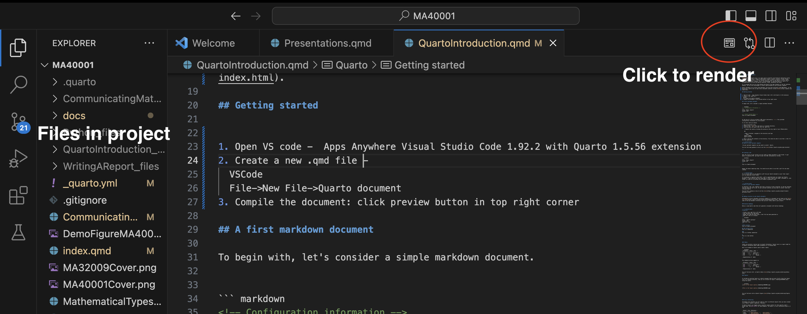
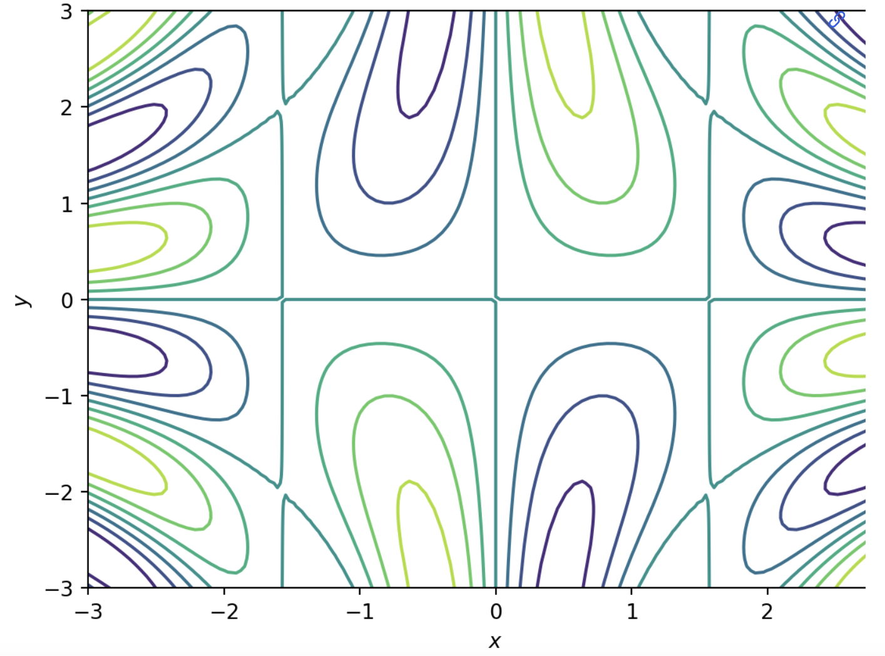

3 Quarto
{#sec-quartoint}
Quarto is an open source scientific and technical publishing system. It can be used to make a range of publishable outputs (reports, posters, slides, blogs, webpages dashboards etc.). In this section you will learn to use Quarto to write reports and make slide decks. However, one of the advantages of learning Quarto is that it is straightforward to write and publish websites, blogs, dashboards and books.
It is assumed that you are using VSCode with Quarto from Apps Anywhere on the Uni machines. However, you are also encouraged to install Quarto/VSCode on your personal computer.
Quarto documents are written using Markdown (you may have previously used RMarkdown). In the background, Quarto uses an open source document convertor called Pandoc.
3.1 Getting started
Visual Studio code is a popular integrated development environment (IDE) that is used to write software.
On Apps Anywhere you can find an iteration of VS Code that has Quarto, Python and Latex preinstalled. The app is called
Visual Studio Code 1.92.2 with Quarto 1.5.56 extension
3.2 A first markdown document
To begin with, let’s consider a simple markdown document.
<!-- Configuration information -->
---
title: "Hello, Quarto"
format: html
---
<!-- Insert content below -->
This is a Quarto document.At the top of a file we include a YAML block (enclosed by ---). This provides configuration information for the document.
To run this code you should:
Open the VisualStudio Code app.
Create a new
.qmdfile and save in a sensible directory.Copy and paste the above code into the .qmd file.
- Compile the code by clicking the preview on the top right of your VSCode editor. 
OR
- Open a terminal, navigate to the directory and type
quarto render quarto previewHave a look at the contents of the directory. You should be able to see that a .html file has been generated.
Open the .html file in a web browser.
3.3 Creating a pdf
Over the course of your project you will need to submit documents in pdf format. To get Quarto to generate a PDF, you can edit the YAML information as follows.
---
title: "Hello, Quarto"
format: pdf
---
This is a Quarto documentRepeat the above compiling steps. You should now be able to see that a pdf file has been created in the directory alongside your .qmd file.
It is crucial that you can generate a pdf from your Quarto document as your final report will be submitted in pdf format.
It is advised to regularly check that a pdf is generated when you render your Quarto document. I have noticed that with some bugs in Latex (more on this later), Quarto can render a document in .html format (it looks ok in preview) but be unable to generate a pdf.
3.4 Adding structure to your Quarto documents
Information on how to document structural elements to a document can be found on the Quarto help pages. Below I will highlight some of the key document structures that you will likely need in your project.
3.4.1 Section headings
Below is some Quarto code that will generate a document with Section headings.
---
title: " Quarto sections"
format: html
code-fold: True
---
# Main section
This is a Quarto document
## Sub section title
This is a subsection
###
This is a further subsection
#
This is a new section
##- Create a new .qmd file in VS Code.
- Copy and paste the above code.
- Render the code and check that a .html file has been generated.
- Add new section headings.
- Generate a table of contents.
3.4.2 Tables
Tables can provide a concise way to present information. Typical uses in a report might be to gather information about model parameters or to display data.
Here is an example of Quarto code to make a table:
| Parameter | Value | Unit |
|---------|:-----|------:|
| $a$ | 1 | ms$^{-1}$ |
| $b$ | 2 | s$^{-1}$ |
| $c$ | 3 | Nondim |
: Demonstration of tableThe rendered version appears as
| Parameter | Value | Unit |
|---|---|---|
| \(a\) | 1 | ms\(^{-1}\) |
| \(b\) | 2 | s\(^{-1}\) |
| \(c\) | 3 | Nondim |
You can find more info. on Quarto tables here.
- Copy and paste the above table into your .qmd file.
- Check that it renders.
- Add another column to the table and render.
- Add another row to the table and render.
3.4.3 Figures
To include an image file in a Quarto document, you must firstly store the image file in a sensible directory. Suppose you store the image in the same directlry as your .qmd file. Then you could include the figure (‘DemoFigureMA40001.png’) using the syntax:

You can find more info on Quarto figures here.
- Choose a .png file to include in your document.
- Save the .png file in the same directory as your .qmd file.
- Include the image and render your Quarto document.
- Try to modify the image height and width.
- Experiment with subfigures.
3.4.4 Cross referencing
Throughout your document you will need to refer to different objects that you have created (e.g. Tables, Figures, equations, theorems).
In Quarto, objects are tagged using a specific syntax (prefix for that specific obect + unique tag). See Table 3.1 for some examples. Such objects can then be cross referenced using an `@’ tag.
| Object | Tag | Reference |
|---|---|---|
| Table | {#tbl-mytable} |
@tbl-mytable |
| Figure | {#fig-myfigure} |
@fig-myfigure |
| Equation | {#eq-myequation} |
@eq-myequation |
The table could be tagged as follows
| Parameter | Value | Unit |
|---------|:-----|------:|
| $a$ | 1 | ms$^{-1}$ |
| $b$ | 2 | s$^{-1}$ |
| $c$ | 3 | Nondim |
: Demonstration of table {#tbl-parameters}The tag can now be cross referenced using the tag (see Table 3.2).
| Parameter | Value | Unit |
|---|---|---|
| \(a\) | 1 | ms\(^{-1}\) |
| \(b\) | 2 | s\(^{-1}\) |
| \(c\) | 3 | Nondim |
In a similar manner we can cross reference an equation (see tag #eq-emc2). This is cross-referenced using the handle @eq-emc2.
$$
E=mc^2
$$ {#eq-emc2}So if I defined an equation \[ E=mc^2, \tag{3.1}\] I can refer to it in the text via Equation 3.1.
Quarto allows for definition and cross referencing of a range of mathematical objects (e.g. theorems, corroloraries)
You can find out more about cross referencing here.
- Tag the table and figure that you made above.
- Cross-reference them in your document.
- Write down a theorem and cross reference it.
3.4.5 Citations and references
In your final report will need to provide a list of references that are cited at relevant points in your document.
This can be achieved relatively straightforwardly in Quarto.
You need to 1. create a .bib file (e.g. mybibliography.bib) and save it in a sensible directory (e.g. alongside your .qmd files).
to populate the .bib file with bibliographic entries, each of which will have a unique tag (e.g.
my_bib_tag)in your
.qmdfile you can cite a reference using the@' handle (e.g.@my_bib_tag’).
You can find out more about citations in Quarto here.
You could use a reference manager such as Mendeley or Jabref.
Alternatively, you
- go to google scholar.
- go to settings tab
- In the Bibliography manager, select -> Show links to import citations into Bibtex
- Now when you search for a paper/textbook in Google scholar, there should be an additional link: ‘import into Bibtex’
- Copy and paste the contents in the link into your .bib file
- Cite the source in your Quarto document.
3.4.6 Schematic diagrams
You can learn how to make diagrams here. Here is an example:
```{mermaid}
flowchart LR
A[Hard edge] --> B(Round edge)
B --> C{Decision}
C --> D[Result one]
C --> E[Result two]
```3.5 Appendices
3.5.1 Submitting code
In your final report you should include codes that you have developed in the appendix. You can do this using a code block.
``` markdown
Copy and paste code here
```3.6 Websites and blogs in Quarto
Given what you have achieved thus far, it is not a very big step to generate and publish websites, blogs and dashboards.
There are some tutorials avilable on how to do this on the Quarto pages.
For guidance on publishing material see here.